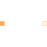

PartialTwoPortsElementaryPartial component with two magnetic ports p and n for textual programming |

|
Information
This information is part of the Modelica Standard Library maintained by the Modelica Association.
Partial model of a flux tube component with two magnetic ports:
the positive port connector port_p, and the negative port
connector port_n. The total magnetic potential difference
V_m and the flux flowing into the positive port,
Phi are also defined in this model.
Connectors (2)
| port_p |
Type: PositiveMagneticPort Description: Positive quasi-static magnetic port |
|
|---|---|---|
| port_n |
Type: NegativeMagneticPort Description: Negative quasi-static magnetic port |
Components (2)
| V_m |
Type: ComplexMagneticPotentialDifference Description: Magnetic potential difference of both ports |
|
|---|---|---|
| Phi |
Type: ComplexMagneticFlux Description: Magnetic flux from port_p to port_n |
Extended by (1)
|
Modelica.Magnetic.QuasiStatic.FluxTubes.Interfaces Partial component with magnetic potential difference between two magnetic ports p and n and magnetic flux Phi from p to n |